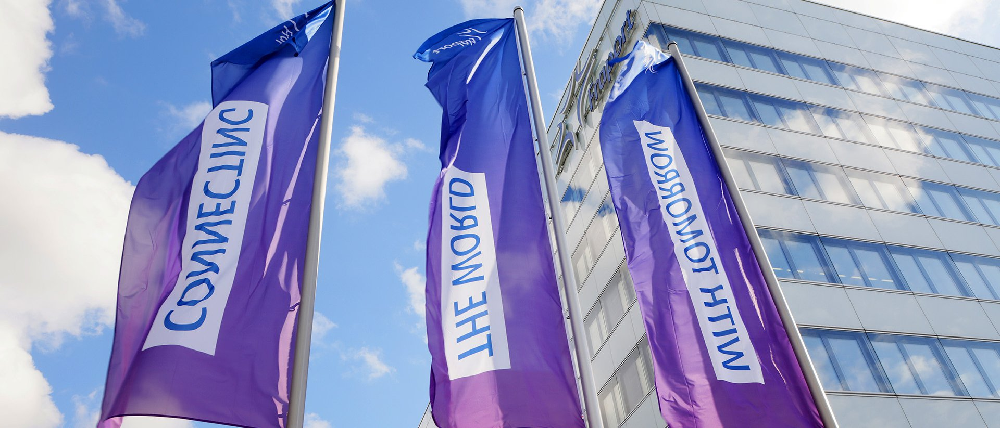

FRAPORT-AKTIE
| Basisdaten | |
| Wertpapierkennnummer (WKN): | DE 000 577 330 3 |
| Börsenkürzel: | FRA |
| Tickerkürzel Reuters: | FRAG.DE |
| Tickerkürzel Bloomberg: | FRA GR |
| Aktiengattung: | Auf den Inhaber lautende Stammaktien ohne Nennbetrag (Stückaktien) |
| Notierung: | Wertpapierbörse Frankfurt am Main Amtlicher Handel/Prime Standard |
| Index Deutsche Börse: | MDAX |
| Nachhaltigkeitsindizes: | FTSE4Good Index, Deutschland Ethik 30 Aktienindex |
| Börsengang der Fraport AG: | 11. Juni 2001 |
| Ausgabepreis: | 35,00 € |
| Anzahl Aktien im Umlauf: | 92.468.704 |
| Grundkapital Fraport AG (nach IFRS): | 924,7 Mio € |
| Rechnerischer Anteil am Grundkapital je Aktie: | 10,00 € |
| Ende des Geschäftsjahres: | 31. Dezember |
| Gesamtzahl der Aktien: | 92.468.704 |
| Zahlstelle: | Commerzbank AG |
Die nachfolgende Übersicht stellt unsere aktuelle Aktionärsstruktur dar.
| Aktionärsstruktur* | |
| Land Hessen | 31,31 % |
| Stadtwerke Frankfurt am Main Holding GmbH | 21,12 % |
| Deutsche Lufthansa AG | 8,44 % |
| First Maven Pty | 5,14% |
| Lazard Asset Management LLC | 3,07 % |
| BlackRock, Inc. | 3,14 % |
| Unbekannt | 27,78 % |
* Die relativen Anteile der Aktionäre wurden an die aktuelle Gesamtzahl der Aktien angepasst und können daher zum Meldezeitpunkt beziehungsweise von den eigenen Angaben der Anteilseigner abweichen. Anteile unter 3% werden dem Free Float zugeordnet.
| 2015 | 2016 | 2017 | 2018 | 2019 | 2020 | 2021 | 2022 | 2023 | 2024 | 2025 | ||||
| Jahresabschluss | € | 58,94 | 56,17 | 91,86 | 62,46 | 75,78 | 49,36 | 59,18 | 38,05 | 54,76 | 58,50 | 69,95 | ||
| Höchstkurs | € | 62,30 | 58,94 | 91,86 | 96,94 | 78,68 | 75,50 | 68,30 | 67,62 | 56,80 | 58,90 | 78,30 | ||
| Tiefstkurs | € | 48,04 | 45,25 | 55,26 | 61,56 | 61,44 | 30,01 | 43,12 | 36,20 | 38,05 | 44,02 | 53,15 | ||
| Jahresperformance | % | +22,7 | -4,7 | +63,5 | -32,0 | +21,3 | -34,9 | +19,9 | -35,7 | +43,9 | +6,8 | +19,6 | ||
| Ergebnis je Aktie (basic) | € | 3,00 | 4,07 | 3,57 | 5,13 | 4,55 | -7,12 | 0,90 | 1,53 | 4,26 | 4,88 | 4,67 | ||
| Dividende je Aktie | € | 1,35 | 1,50 | 1,50 | 2,00 | 0,00 | 0,00 | 0,00 | 0,00 | 0,00 | 0,00 | 1,00 | ||
| Dividendenrendite zum 31.12. | % | 2,3 | 2,7 | 1,6 | 3,2 | - | - | - | - | - | - | 1,4 | ||
| Kurs-Gewinn-Verhältnis | 19,6 | 13,8 | 25,7 | 12,2 | 16,7 | -6,9 | 65,8 | 26,6 | 12,9 | 12 | 15,0 | |||
| Durchschnittliches Handelsvolumen pro Tag | Stück | 151.188 | 173.666 | 173.015 | 160.367 | 128.953 | 398.143 | 256.728 | 202.994 | 149.680 | 148.432 | 143.290 | ||
| Marktkapitalisierung zum 31.12. | Mio € | 5.443 | 5.192 | 8.494 | 5.776 | 7.007 | 4.564 | 5.472 | 3.518 | 5.046 | 5.409 | 6.468 | ||
| Gesamtzahl der Aktien zum 31.12. | Mio Stück | 92,4 | 92,4 | 92,5 | 92,5 | 92,5 | 92,5 | 92,5 | 92,5 | 92,5 | 92,5 | 92,5 | ||
| Anzahl der Aktien im Umlauf zum 31.12. | Mio Stück | 92,3 | 92,4 | 92,4 | 92,4 | 92,4 | 92,4 | 92,4 | 92,4 | 92,4 | 92,4 | 92,5 |
Die ordentliche Hauptversammlung der Fraport AG hat am 12. Mai 2026 dem Vorschlag von Vorstand und Aufsichtsrat zur Ausschüttung einer Dividende in Höhe von 1,00 Euro je Aktie für das Geschäftsjahr 2025 zugestimmt. Damit zahlt Fraport erstmals seit Ausbruch der COVID-19-Pandemie wieder eine Dividende aus.
Künftig beabsichtigt der Vorstand, die jährliche Dividendenentwicklung an den Verschuldungsgrad des Fraport-Konzerns zu koppeln. Bis zur Unterschreitung eines Konzern-Verschuldungsgrades von 5,0x Netto-Finanzschulden zu EBITDA (Net Debt / EBITDA) ist vorgesehen, der Hauptversammlung eine konstante Dividende von 1,00 Euro je Aktie vorzuschlagen.
Ab einem Konzern-Verschuldungsgrad von weniger als 5,0x Netto-Finanzschulden zu EBITDA ist geplant, eine Dividendenpolitik mit einer Ausschüttungsquote von etwa 60 % bis 80 % des auf die Aktionäre entfallenden Konzernergebnisses zu verfolgen.
Die Mitarbeiterinnen und Mitarbeiter eines Dienstleistungsunternehmens prägen mit ihrem Wissen und Engagement maßgeblich die Wahrnehmung des Unternehmens durch unsere Kunden und tragen so zum Unternehmenserfolg bei. Fraport bietet daher seinen Beschäftigten ein Arbeitsumfeld, das Leistung belohnt, individuelle Entwicklungsmöglichkeiten bietet und die Beschäftigten am Unternehmenserfolg beteiligt. Ein wichtiger Bestandteil unseres leistungs- und erfolgsabhängigen Vergütungssystems ist auch das Mitarbeiteraktienprogramm. Bei diesem können Mitarbeiterinnen und Mitarbeiter jährlich individuell entscheiden, ob sie anstelle einer Geldleistung Aktien der Fraport AG zu vergünstigten Konditionen erwerben. Das Mitarbeiteraktienprogramm steht auch Beschäftigten von verschiedenen Fraport-Mehrheitsbeteiligungen in Deutschland offen, die sich zur Teilnahme an diesem Programm entschieden haben.
Seit 2001 wurden hierbei insgesamt über 1,6 Millionen Aktien mit einem Nennwert von je 10,00 € an die Beschäftigten ausgegeben. Die Beschäftigten der Fraport AG konnten im aktuellen Jahr alternativ zur Geldleistung (Zuwendung in Höhe von 300,00 € brutto) das Aktienmodell (Zuwendung im Wert von bis zu 360,00 € in Form von Fraport-Aktien) wählen. Die Beschäftigten der teilnehmenden Tochterunternehmen konnten - je nach Unternehmen - ebenfalls Aktien im Gegenwert von bis zu 360,00 € wählen.
Für die Durchführung des diesjährigen Mitarbeiterbeteiligungsprogramms hat der Vorstand der Fraport AG Frankfurt Airport Services Worldwide (ISIN DE0005773303) beschlossen, eigene Aktien über die Börse zurückzukaufen. Zur Erfüllung sämtlicher Ansprüche werden bis zu 75.000 eigene Aktien (das entspricht etwa 0,081 Prozent des Grundkapitals) erworben.
Der Aktienrückkauf erfolgt gemäß der Bestimmung des § 71 Abs. 1 Nr. 2 AktG. Er dient ausschließlich dazu, die Verpflichtungen aus dem Belegschaftsaktienprogramm der Fraport AG Frankfurt Airport Services Worldwide zu erfüllen. Der Gesamtkaufpreis (ohne Erwerbsnebenkosten) beträgt bis zu 5,2 Mio. EUR.
Der Aktienrückkauf beginnt am 01. Juni 2026 und wird bis zum 30. Juni 2026 abgeschlossen sein. Er erfolgt durch einen unabhängigen Finanzdienstleister und nach Maßgabe der Safe-Harbour-Regelungen des Artikels 5 der Verordnung (EU) Nr. 596/2014 des Europäischen Parlaments und Rates vom 16. April 2014 in Verbindung mit den Bestimmungen der Delegierten Verordnung (EU) 2016/1052 der Kommission vom 8. März 2016. Der Finanzdienstleister ist insbesondere verpflichtet, den Aktienrückkauf wie folgt auszuführen:
1. Die Aktien werden zu Marktpreisen in Einklang mit den zuvor genannten Verordnungen erworben. Die Aktien werden nicht zu einem Kurs erworben, der über dem des letzten unabhängig getätigten Abschlusses liegt oder (sollte dieser höher sein) über dem des derzeit höchsten unabhängigen Angebots auf den Handelsplätzen, auf denen der Kauf stattfindet.
2. Es werden an einem Handelstag nicht mehr als 25 Prozent des durchschnittlichen täglichen Aktienumsatzes auf dem Handelsplatz erworben, auf dem der Kauf erfolgt. Der durchschnittliche Tagesumsatz beruht auf dem durchschnittlichen täglichen Handelsvolumen in dem Monat vor dem Monat, in dem die Veröffentlichung des Aktienrückkaufprogramms erfolgt ist, d.h. auf dem durchschnittlichen täglichen Handelsvolumen im April 2026.
| Aktienrückkauf 2026 | ||||
| Zeitraum | Anzahl zurückgekaufter Aktien (Stück) | Gewichteter Durchschnittspreis (in €) | Rückkaufvolumen (in €) | Details (Übersicht) |
| KW 23 | 15.000 | 69,2886 | 1.039.329,00 | |
| 01. Juni 2026 | 3.000 | 70,9403 | 212.820,80 | KW 23 |
| 02. Juni 2026 | 3.000 | 69,5979 | 208.793,70 | KW 23 |
| 03. Juni 2026 | 3.000 | 68,5592 | 205.677,70 | KW 23 |
| 04. Juni 2026 | 3.000 | 68,9412 | 206.823,65 | KW 23 |
| 05. Juni 2026 | 3.000 | 68.4044 | 205.213,15 | KW 23 |
| KW 24 | 9.000 | 67,4577 | 607.119,45 | |
| 08. Juni 2026 | 3.000 | 67,3707 | 202.111,95 | KW 24 |
| 09. Juni 2026 | 3.000 | 67,3815 | 202.144,60 | KW 24 |
| 10. Juni 2026 | 3.000 | 67,6210 | 202.862,90 | KW 24 |
| Aktienrückkauf 2025 | ||||
| Zeitraum | Anzahl zurückgekaufter Aktien (Stück) | Gewichteter Durchschnittspreis (in €) | Rückkaufvolumen (in €) | Details (Übersicht) |
| KW 23 | 16.500 | 62,1523 | 1.025.513,1 | |
| 02. Juni 2025 | 3.300 | 60,3404 | 199.123,30 | KW23 |
| 03. Juni 2025 | 3.300 | 61,0896 | 201.595,60 | KW23 |
| 04. Juni 2025 | 3.300 | 62,2199 | 205.325,75 | KW23 |
| 05. Juni 2025 | 3.300 | 62,9284 | 207.663,85 | KW23 |
| 06. Juni 2025 | 3.300 | 64,1832 | 211.804,60 | KW23 |
| KW 24 | 13.500 | 62,4702 | 843.348,6 | |
| 10 Juni. 2025 | 3.300 | 63,6262 | 209.966,50 | KW 24 |
| 11. Juni 2025 | 3.300 | 63,4894 | 209.515,10 | KW 24 |
| 12. Juni 2025 | 3.300 | 62,4688 | 206.147,05 | KW 24 |
| 13. Juni 2025 | 3.600 | 60,4778 | 217.719,95 | KW 24 |
| Aktienrückkauf 2024 | ||||
| Zeitraum | Anzahl zurückgekaufter Aktien (Stück) | Gewichteter Durchschnittspreis (in €) | Rückkaufvolumen (in €) | Details (Übersicht) |
| KW 23 | 16.000 | 53,8148 | 861.036,21 | |
| 04. Juni 2024 | 4.000 | 52,9294 | 211.717,55 | KW23 |
| 05. Juni 2024 | 4.000 | 53,9417 | 215766,65 | KW23 |
| 06. Juni 2024 | 4.000 | 54,2478 | 216.991,05 | KW23 |
| 07. Juni 2024 | 4.000 | 54,1402 | 216.560,95 | KW23 |
| KW 24 | 18.100 | 52,1038 | 943.078,98 | |
| 10. Juni 2024 | 4.000 | 53,2017 | 212.806,85 | KW24 |
| 11. Juni 2024 | 4.000 | 51,7630 | 207.052,05 | KW24 |
| 12. Juni 2024 | 4.000 | 52,2291 | 208.916,50 | KW24 |
| 13. Juni 2024 | 4.000 | 52,3078 | 209.231,05 | KW24 |
| 14. Juni 2024 | 2.100 | 50,0345 | 105.072,52 | KW24 |
| Gesamt | 34.100 | 52,9066 | 1.804.115,19 |
| Aktienrückkauf 2023 | ||||
| Zeitraum | Anzahl zurückgekaufter Aktien (Stück) | Gewichteter Durchschnittspreis (in €) | Rückkaufvolumen (in €) | Details (Übersicht) |
| KW 23 | 17.500 | 46,1565 | 807.738,81 | |
| 05. Juni 2023 | 4.375 | 48,2410 | 211.054,18 | KW23 |
| 06. Juni 2023 | 4.375 | 45,8035 | 200.390,10 | KW23 |
| 07. Juni 2023 | 4.375 | 46,5032 | 203.451,32 | KW23 |
| 08. Juni 2023 | 4.375 | 46,1309 | 201.822,89 | KW23 |
| 09. Juni 2023 | 4.375 | 46,1885 | 202.074,50 | KW23 |
| KW 24 | 18.125 | 47,4075 | 859.261,82 | |
| 12. Juni 2023 | 4.375 | 46,2007 | 202.128,12 | KW24 |
| 13. Juni 2023 | 4.375 | 46,9989 | 205.620,04 | KW24 |
| 14. Juni 2023 | 4.375 | 47,9482 | 209.773,40 | KW24 |
| 15. Juni 2023 | 5.000 | 48,3481 | 241.740,26 | KW24 |
| Gesamt | 35.625 | 46,7930 | 1.667.000,63 |
| Aktienrückkauf 2022 | ||||
| Zeitraum | Anzahl zurückgekaufter Aktien (Stück) | Gewichteter Durchschnittspreis (in €) | Rückkaufvolumen (in €) | Details (Übersicht) |
| KW 23 | 16.000 | 52,0443 | 832.709,10 | |
| 07. Juni 2022 | 4.000 | 52,7670 | 211.068,04 | KW23 |
| 08. Juni 2022 | 4.000 | 52,2095 | 208.837,92 | KW23 |
| 09. Juni 2022 | 4.000 | 51,7491 | 206.996,42 | KW23 |
| 10. Juni 2022 | 4.000 | 51,4517 | 205.806,72 | KW23 |
| KW 24 | 20.000 | 48,7738 | 975.475,47 | |
| 13. Juni 2022 | 4.000 | 50,4990 | 201.996,06 | KW24 |
| 14. Juni 2022 | 4.000 | 48,6574 | 194.629,65 | KW24 |
| 15. Juni 2022 | 4.000 | 47,4434 | 189.773,65 | KW24 |
| 16. Juni 2022 | 4.000 | 48,8449 | 195.379,74 | KW24 |
| 17. Juni 2022 | 4.000 | 48,4241 | 193.696,37 | KW24 |
| Gesamt | 36.000 | 50,2273 | 1.808.184,57 |
| Aktienrückkauf 2021 | ||||
| Zeitraum | Anzahl zurückgekaufter Aktien (Stück) | Gewichteter Durchschnittspreis (in €) | Rückkaufvolumen (in €) | Details (Übersicht) |
| KW 22 | 3.750 | 58,0485 | 217.681,92 | |
| 04. Juni 2021 | 3.750 | 58,0485 | 217.681,92 | KW22 |
| KW 23 | 18.750 | 60,2765 | 1.130.184,14 | |
| 07. Jun 2021 | 3.750 | 57,8410 | 216.903,74 | KW23 |
| 08. Juni 2021 | 3.750 | 59,0573 | 221.465,00 | KW23 |
| 09. Juni 2021 | 3.750 | 60,6273 | 227.352,40 | KW23 |
| 10. Juni 2021 | 3.750 | 61,3827 | 230.185,00 | KW23 |
| 11. Juni 2021 | 3.750 | 62,4741 | 234.278,00 | KW23 |
| KW 24 | 10.500 | 63,3445 | 665.117,64 | |
| 14. Juni 2021 | 3.750 | 62,8589 | 235.721,00 | KW24 |
| 15. Juni 2021 | 3.750 | 64,2355 | 240.883,04 | KW24 |
| 16. Juni 2021 | 3.000 | 62,8379 | 188.513,60 | KW24 |
| Gesamt | 33.000 | 60,9995 | 2.012.983,70 |
| Aktienrückkauf 2020 | ||||
| Zeitraum | Anzahl zurückgekaufter Aktien (Stück) | Gewichteter Durchschnittspreis (in €) | Rückkaufvolumen (in €) | Details (Übersicht) |
| KW 22 | 11.000 | 45,0991 | 496.090,34 | |
| 28. Mai 2020 | 5.500 | 46,07241 | 253.398,26 | KW22 |
| 29. Mai 2020 | 5.500 | 44,1258 | 242.692,08 | KW22 |
| KW 23 | 22.000 | 46,1949 | 1.016.287,40 | |
| 02. Juni 2020 | 5.500 | 45,3021 | 249.161,68 | KW23 |
| 03. Juni 2020 | 5.500 | 45,5293 | 250.411,28 | KW23 |
| 04. Juni 2020 | 5.500 | 45,7860 | 251.823,06 | KW23 |
| 05. Juni 2020 | 5.500 | 48,1621 | 264.891,38 | KW23 |
| KW 24 | 15.700 | 48,8264 | 766.574,08 | |
| 08. Juni 2020 | 5.500 | 50,6577 | 278.617,23 | KW24 |
| 09. Juni 2020 | 5.500 | 48,3823 | 266.102,77 | KW24 |
| 10. Juni 2020 | 4.700 | 47,2030 | 221.854,08 | KW24 |
| Gesamt | 48.700 | 46,7957 | 2.278.951,81 |
| Aktienrückkauf 2019 | ||||
| Zeitraum | Anzahl zurückgekaufter Aktien (Stück) | Gewichteter Durchschnittspreis (in €) | Rückkaufvolumen (in €) | Details (Übersicht) |
| KW 23 | 17.000 | 72,6045 | 1.234.276,54 | |
| 03. Juni 2019 | 3.400 | 70,5461 | 239.856,70 | KW 23 |
| 04. Juni 2019 | 3.400 | 71,8930 | 244.436,08 | KW 23 |
| 05. Juni 2019 | 3.400 | 73,2592 | 249.081,12 | KW 23 |
| 06. Juni 2019 | 3.400 | 73,2625 | 249.092,44 | KW 23 |
| 07. Juni 2019 | 3.400 | 74,0618 | 251.810,20 | KW 23 |
| KW 24 | 13.236 | 75,8558 | 1.004.027,26 | |
| 11. Juni 2019 | 3.309 | 75,3930 | 249.475,52 | KW 24 |
| 12. Juni 2019 | 3.309 | 75,6927 | 250.467,30 | KW 24 |
| 13. Juni 2019 | 3.309 | 76,2886 | 252.439,04 | KW 24 |
| 14. Juni 2019 | 3.309 | 76,0488 | 251.645,40 | KW 24 |
| Gesamt | 30.236 | 74,0278 | 2.238.303,80 |
| Aktienrückkauf 2018 | ||||
| Zeitraum | Anzahl zurückgekaufter Aktien (Stück) | Gewichteter Durchschnittspreis (in €) | Rückkaufvolumen (in €) | Details (Übersicht) |
| KW 22 | 7.998 | 80,4203 | 643.201,76 | |
| 30. Mai 2018 | 2.666 | 79,7843 | 212.705,00 | KW 22 |
| 31. Mai 2018 | 2.666 | 81,4047 | 217.024,80 | KW 22 |
| 1. Juni 2018 | 2.666 | 80,0720 | 213.471,96 | KW 22 |
| KW 23 | 13.335 | 80,5823 | 1.074.565,24 | |
| 4. Juni 2018 | 2.667 | 80,1652 | 213.800,72 | KW 23 |
| 5. Juni 2018 | 2.667 | 80,7066 | 215.244,54 | KW 23 |
| 6. Juni 2018 | 2.667 | 80,7360 | 215.323,04 | KW 23 |
| 7. Juni 2018 | 2.667 | 81,3623 | 215.323,04 | KW 23 |
| 8. Juni 2018 | 2.667 | 79,9414 | 213.203,60 | KW 23 |
| KW 24 | 4.067 | 79,5955 | 323.607,80 | |
| 11. Juni 2018 | 2.667 | 79,5110 | 212.055,80 | KW 24 |
| 12. Juni 2018 | 1.400 | 79,6800 | 111.552,00 | KW 24 |
| Gesamt | 25.400 | 80,3364 | 2.041.374,80 |